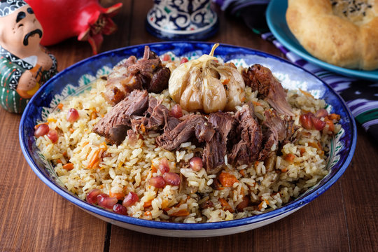

Plov

Description
Plov is the symbol of Uzbek food. It is prepared in every Uzbekistan family, whether Uzbek, Russian, Tatar of Korean.
Uzbek plov is the part of mentality of Uzbekistan people.
Commonly Uzbek plov is cooked with rice, fresh mutton or beef, yellow or red carrot, onions and vegetable oil.
Traditionally, Uzbek plov is prepared in a deep cast-iron pot (kazan), which is uniformly warmed and a dish is not burnt.
Ingredients
- 2 cups of long-grain rice (preferably basmati)
- 1 lb (450 g) lamb or beef, cut into bite-sized pieces
- 2 large carrots, julienned
- 1 large onion, finely chopped
- 4 cloves garlic, peeled
- 1/2 cup vegetable oil
- 1 tablespoon cumin seeds
- 1 tablespoon coriander seeds
- 1 teaspoon ground black pepper
- 1 tablespoon salt
- 1/2 cup raisins (optional)
- 1/2 cup chickpeas, soaked and boiled (optional)
- 3 cups water
Steps
- Rinse Rice: Rinse the rice under cold water until the water runs clear. Soak the rice in cold water for 30 minutes, then drain.
- Heat Oil: In a large, heavy-bottomed pot or Dutch oven, heat the vegetable oil over medium heat.
- Cook Meat: Add the meat to the pot and cook until browned on all sides.
- Add Onions: Add the chopped onions to the pot and cook until they become soft and translucent.
- Add Carrots: Stir in the julienned carrots and cook for about 5-7 minutes until they start to soften.
- Season: Add the cumin seeds, coriander seeds, ground black pepper, and salt. Stir to combine.
- Add Garlic and Water: Place the whole garlic cloves on top of the meat and vegetables. Pour in the water and bring to a boil.
- Add Rice: Spread the drained rice evenly over the meat and vegetables. Do not stir. Add raisins and chickpeas if using.
- Cook Covered: Reduce the heat to low, cover the pot, and cook for about 20 minutes, or until the rice is tender and the water is absorbed.
- Rest and Serve: Once cooked, remove from heat and let it rest, covered, for 10 minutes. Fluff the rice with a fork before serving.